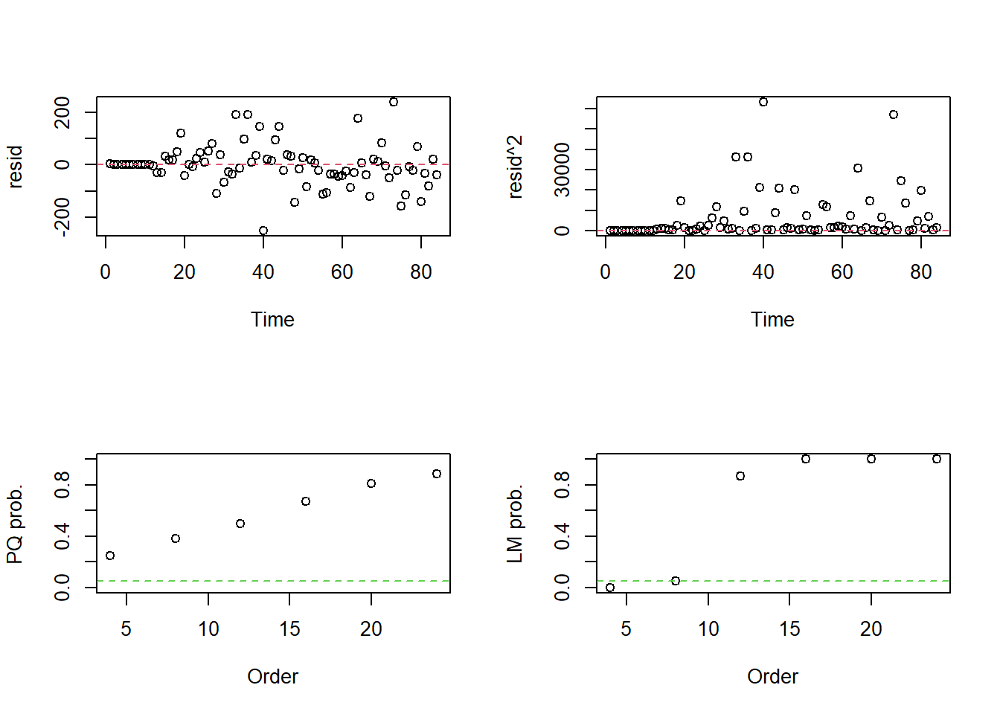
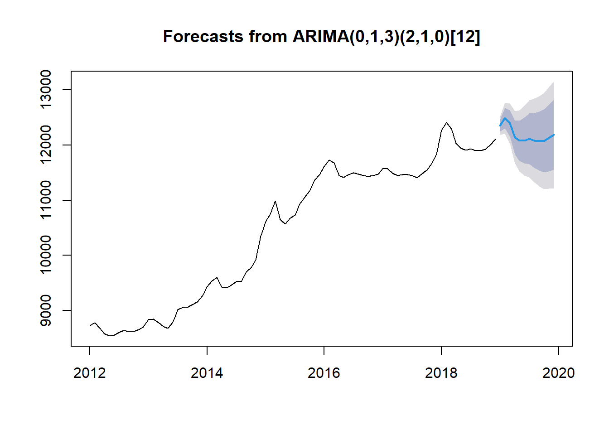
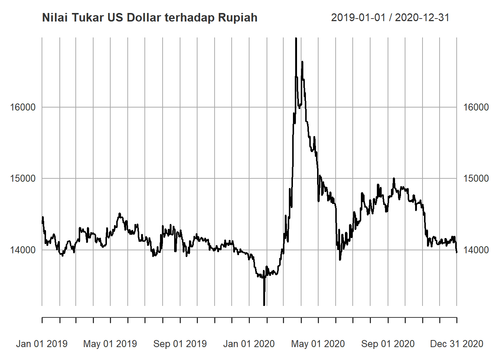
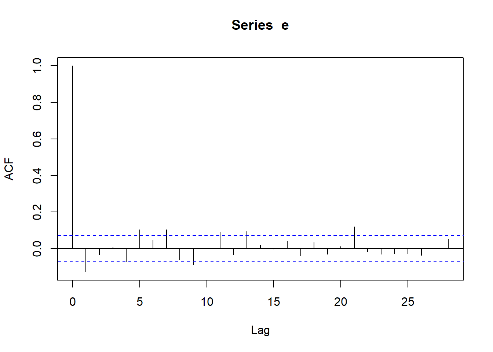
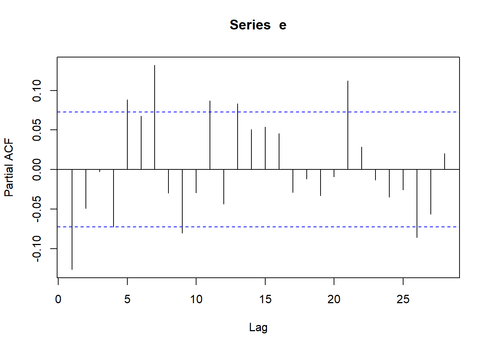
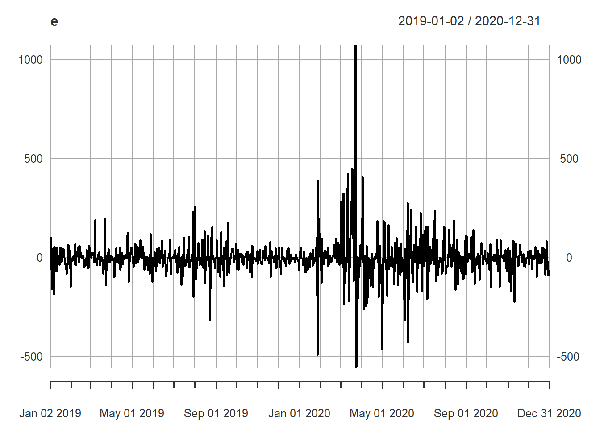
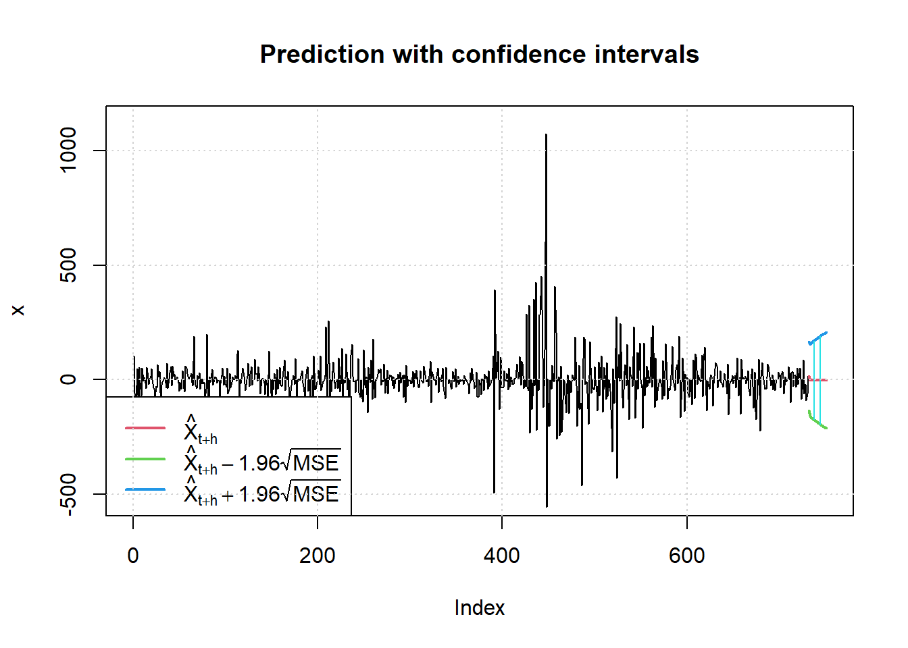

3 Univariate Time Series
3.1 Data EDA
library(readxl)
#> Warning: package 'readxl' was built under R version 4.2.3
hargaberas <- read_excel("Data/Bab 3/ARIMA.xlsx")
hargaberas = hargaberas[,c(-1)]
hargaberas = ts(hargaberas, start=c(2012,1), frequency=12)
hargaberas
#> Jan Feb Mar Apr May Jun Jul Aug Sep
#> 2012 8726 8778 8687 8583 8537 8554 8606 8635 8624
#> 2013 8835 8843 8783 8711 8681 8784 9018 9057 9058
#> 2014 9433 9531 9596 9425 9414 9462 9525 9525 9694
#> 2015 10612 10766 10987 10648 10569 10679 10732 10935 11055
#> 2016 11614 11729 11678 11449 11417 11469 11498 11475 11448
#> 2017 11579 11571 11494 11449 11465 11465 11448 11411 11482
#> 2018 12276 12414 12299 12035 11943 11907 11936 11899 11900
#> Oct Nov Dec
#> 2012 8624 8655 8702
#> 2013 9108 9152 9262
#> 2014 9781 9924 10344
#> 2015 11169 11365 11465
#> 2016 11433 11450 11476
#> 2017 11552 11665 11838
#> 2018 11926 12013 12106
plot(hargaberas, main="Harga Beras di Perdagangan Besar")
 ## ACF and PACF Plot
## ACF and PACF Plot ##Stationary Test
##Stationary Test
library(aTSA)
#> Warning: package 'aTSA' was built under R version 4.2.3
#>
#> Attaching package: 'aTSA'
#> The following object is masked from 'package:graphics':
#>
#> identify
# Augmented Dickey-Fuller Test
adf.test(hargaberas)
#> Augmented Dickey-Fuller Test
#> alternative: stationary
#>
#> Type 1: no drift no trend
#> lag ADF p.value
#> [1,] 0 2.96 0.990
#> [2,] 1 1.65 0.975
#> [3,] 2 2.04 0.990
#> [4,] 3 2.18 0.990
#> Type 2: with drift no trend
#> lag ADF p.value
#> [1,] 0 -0.537 0.858
#> [2,] 1 -0.717 0.795
#> [3,] 2 -0.831 0.755
#> [4,] 3 -0.917 0.724
#> Type 3: with drift and trend
#> lag ADF p.value
#> [1,] 0 -1.42 0.814
#> [2,] 1 -2.56 0.340
#> [3,] 2 -2.00 0.570
#> [4,] 3 -1.78 0.663
#> ----
#> Note: in fact, p.value = 0.01 means p.value <= 0.01
# Firs Difference Form
adf.test(diff(hargaberas))
#> Augmented Dickey-Fuller Test
#> alternative: stationary
#>
#> Type 1: no drift no trend
#> lag ADF p.value
#> [1,] 0 -5.11 0.01
#> [2,] 1 -5.02 0.01
#> [3,] 2 -4.42 0.01
#> [4,] 3 -4.36 0.01
#> Type 2: with drift no trend
#> lag ADF p.value
#> [1,] 0 -5.47 0.01
#> [2,] 1 -5.58 0.01
#> [3,] 2 -5.10 0.01
#> [4,] 3 -5.27 0.01
#> Type 3: with drift and trend
#> lag ADF p.value
#> [1,] 0 -5.43 0.01
#> [2,] 1 -5.55 0.01
#> [3,] 2 -5.10 0.01
#> [4,] 3 -5.28 0.01
#> ----
#> Note: in fact, p.value = 0.01 means p.value <= 0.013.2 ARIMA
library(forecast)
#> Warning: package 'forecast' was built under R version 4.2.3
#> Registered S3 method overwritten by 'quantmod':
#> method from
#> as.zoo.data.frame zoo
#>
#> Attaching package: 'forecast'
#> The following object is masked from 'package:aTSA':
#>
#> forecast
auto.arima(hargaberas, trace=TRUE)
#>
#> ARIMA(2,1,2)(1,1,1)[12] : Inf
#> ARIMA(0,1,0)(0,1,0)[12] : 884.0934
#> ARIMA(1,1,0)(1,1,0)[12] : 872.3993
#> ARIMA(0,1,1)(0,1,1)[12] : Inf
#> ARIMA(1,1,0)(0,1,0)[12] : 876.5573
#> ARIMA(1,1,0)(2,1,0)[12] : 863.6643
#> ARIMA(1,1,0)(2,1,1)[12] : Inf
#> ARIMA(1,1,0)(1,1,1)[12] : Inf
#> ARIMA(0,1,0)(2,1,0)[12] : 867.3178
#> ARIMA(2,1,0)(2,1,0)[12] : 865.871
#> ARIMA(1,1,1)(2,1,0)[12] : 865.1084
#> ARIMA(0,1,1)(2,1,0)[12] : 862.9856
#> ARIMA(0,1,1)(1,1,0)[12] : 871.9363
#> ARIMA(0,1,1)(2,1,1)[12] : Inf
#> ARIMA(0,1,1)(1,1,1)[12] : Inf
#> ARIMA(0,1,2)(2,1,0)[12] : 861.8543
#> ARIMA(0,1,2)(1,1,0)[12] : 872.2305
#> ARIMA(0,1,2)(2,1,1)[12] : Inf
#> ARIMA(0,1,2)(1,1,1)[12] : Inf
#> ARIMA(1,1,2)(2,1,0)[12] : 867.0498
#> ARIMA(0,1,3)(2,1,0)[12] : 854.8026
#> ARIMA(0,1,3)(1,1,0)[12] : 865.2557
#> ARIMA(0,1,3)(2,1,1)[12] : Inf
#> ARIMA(0,1,3)(1,1,1)[12] : Inf
#> ARIMA(1,1,3)(2,1,0)[12] : Inf
#> ARIMA(0,1,4)(2,1,0)[12] : 857.2177
#> ARIMA(1,1,4)(2,1,0)[12] : 859.7882
#>
#> Best model: ARIMA(0,1,3)(2,1,0)[12]
#> Series: hargaberas
#> ARIMA(0,1,3)(2,1,0)[12]
#>
#> Coefficients:
#> ma1 ma2 ma3 sar1 sar2
#> 0.3775 0.0028 0.4180 -0.4831 -0.4956
#> s.e. 0.1166 0.1301 0.1403 0.1231 0.1239
#>
#> sigma^2 = 7757: log likelihood = -420.75
#> AIC=853.49 AICc=854.8 BIC=867.07
library(lmtest)
#> Loading required package: zoo
#> Warning: package 'zoo' was built under R version 4.2.3
#>
#> Attaching package: 'zoo'
#> The following objects are masked from 'package:base':
#>
#> as.Date, as.Date.numeric
# Best model: ARIMA(0,1,3)(2,1,0)[12]
model1 = arima(hargaberas, order=c(0,1,3), seasonal=list(order=c(2,1,0), period=12))
coeftest(model1)
#>
#> z test of coefficients:
#>
#> Estimate Std. Error z value Pr(>|z|)
#> ma1 0.377526 0.116627 3.2370 0.001208 **
#> ma2 0.002799 0.130115 0.0215 0.982837
#> ma3 0.417985 0.140264 2.9800 0.002883 **
#> sar1 -0.483126 0.123055 -3.9261 8.634e-05 ***
#> sar2 -0.495630 0.123883 -4.0008 6.313e-05 ***
#> ---
#> Signif. codes:
#> 0 '***' 0.001 '**' 0.01 '*' 0.05 '.' 0.1 ' ' 1
# Arch Test
arch.test(model1)
#> ARCH heteroscedasticity test for residuals
#> alternative: heteroscedastic
#>
#> Portmanteau-Q test:
#> order PQ p.value
#> [1,] 4 5.41 0.247
#> [2,] 8 8.53 0.384
#> [3,] 12 11.36 0.498
#> [4,] 16 13.03 0.670
#> [5,] 20 14.44 0.808
#> [6,] 24 16.04 0.887
#> Lagrange-Multiplier test:
#> order LM p.value
#> [1,] 4 41.16 6.04e-09
#> [2,] 8 13.84 5.42e-02
#> [3,] 12 6.06 8.69e-01
#> [4,] 16 3.39 9.99e-01
#> [5,] 20 2.16 1.00e+00
#> [6,] 24 1.16 1.00e+00
# Autocorrelartion Test
Box.test(model1$residuals, lag = 1, type = c("Ljung-Box"), fitdf = 0)
#>
#> Box-Ljung test
#>
#> data: model1$residuals
#> X-squared = 0.0041444, df = 1, p-value = 0.9487
# Forecasting
forecast(model1, h=12)
#> Point Forecast Lo 80 Hi 80 Lo 95 Hi 95
#> Jan 2019 12355.67 12246.95 12464.39 12189.39 12521.95
#> Feb 2019 12493.09 12308.02 12678.16 12210.05 12776.13
#> Mar 2019 12392.80 12154.53 12631.07 12028.40 12757.21
#> Apr 2019 12143.41 11835.19 12451.63 11672.03 12614.80
#> May 2019 12079.80 11714.79 12444.80 11521.57 12638.02
#> Jun 2019 12086.96 11672.89 12501.04 11453.70 12720.23
#> Jul 2019 12116.54 11658.63 12574.45 11416.22 12816.85
#> Aug 2019 12086.48 11588.57 12584.38 11325.00 12847.96
#> Sep 2019 12072.73 11537.81 12607.64 11254.64 12890.81
#> Oct 2019 12077.85 11508.32 12647.38 11206.83 12948.88
#> Nov 2019 12129.83 11527.68 12731.99 11208.92 13050.75
#> Dec 2019 12188.63 11555.52 12821.73 11220.38 13156.88
3.3 ARCH-GARCH
library(readxl)
kurs <- read_excel("Data/Bab 3/ARCH-GARCH.xlsx")
kurs = kurs[,c(-1)]
Dates = seq(as.Date("2019-01-01"), as.Date("2020-12-31"), "day")
library(xts)
#> Warning: package 'xts' was built under R version 4.2.3
kurs = xts(kurs, order.by = Dates)
plot(kurs, main="Nilai Tukar US Dollar terhadap Rupiah")
# ARIMA
auto.arima(kurs, trace=TRUE)
#>
#> Fitting models using approximations to speed things up...
#>
#> ARIMA(2,1,2) with drift : 8738.664
#> ARIMA(0,1,0) with drift : 8755.631
#> ARIMA(1,1,0) with drift : 8745.702
#> ARIMA(0,1,1) with drift : 8744.836
#> ARIMA(0,1,0) : 8753.644
#> ARIMA(1,1,2) with drift : 8742.017
#> ARIMA(2,1,1) with drift : 8748.12
#> ARIMA(3,1,2) with drift : 8746.649
#> ARIMA(2,1,3) with drift : 8740.697
#> ARIMA(1,1,1) with drift : 8746.629
#> ARIMA(1,1,3) with drift : 8743.813
#> ARIMA(3,1,1) with drift : 8748.657
#> ARIMA(3,1,3) with drift : 8751.34
#> ARIMA(2,1,2) : 8736.651
#> ARIMA(1,1,2) : 8740.011
#> ARIMA(2,1,1) : 8746.122
#> ARIMA(3,1,2) : 8744.611
#> ARIMA(2,1,3) : 8738.68
#> ARIMA(1,1,1) : 8744.657
#> ARIMA(1,1,3) : 8741.802
#> ARIMA(3,1,1) : 8746.636
#> ARIMA(3,1,3) : 8749.317
#>
#> Now re-fitting the best model(s) without approximations...
#>
#> ARIMA(2,1,2) : 8739.165
#>
#> Best model: ARIMA(2,1,2)
#> Series: kurs
#> ARIMA(2,1,2)
#>
#> Coefficients:
#> ar1 ar2 ma1 ma2
#> 1.2304 -0.7997 -1.3560 0.8726
#> s.e. 0.0650 0.0506 0.0599 0.0425
#>
#> sigma^2 = 9181: log likelihood = -4364.54
#> AIC=8739.08 AICc=8739.16 BIC=8762.05
# Best model: ARIMA(2,1,2)
model2 = arima(kurs, order=c(2,1,2))
coeftest(model2)
#>
#> z test of coefficients:
#>
#> Estimate Std. Error z value Pr(>|z|)
#> ar1 1.230421 0.065027 18.922 < 2.2e-16 ***
#> ar2 -0.799713 0.050577 -15.812 < 2.2e-16 ***
#> ma1 -1.355960 0.059905 -22.635 < 2.2e-16 ***
#> ma2 0.872641 0.042457 20.554 < 2.2e-16 ***
#> ---
#> Signif. codes:
#> 0 '***' 0.001 '**' 0.01 '*' 0.05 '.' 0.1 ' ' 1
# ARCH Test
arch.test(model2)
#> ARCH heteroscedasticity test for residuals
#> alternative: heteroscedastic
#>
#> Portmanteau-Q test:
#> order PQ p.value
#> [1,] 4 70.7 1.6e-14
#> [2,] 8 134.2 0.0e+00
#> [3,] 12 188.4 0.0e+00
#> [4,] 16 206.3 0.0e+00
#> [5,] 20 216.8 0.0e+00
#> [6,] 24 225.0 0.0e+00
#> Lagrange-Multiplier test:
#> order LM p.value
#> [1,] 4 1471 0.00e+00
#> [2,] 8 446 0.00e+00
#> [3,] 12 251 0.00e+00
#> [4,] 16 179 0.00e+00
#> [5,] 20 135 0.00e+00
#> [6,] 24 106 1.14e-12 if p.value <- 0.05 = ARCH/GARCH
if p.value <- 0.05 = ARCH/GARCH
library(fGarch)
#> Warning: package 'fGarch' was built under R version 4.2.3
#> NOTE: Packages 'fBasics', 'timeDate', and 'timeSeries' are no longer
#> attached to the search() path when 'fGarch' is attached.
#>
#> If needed attach them yourself in your R script by e.g.,
#> require("timeSeries")
# Stationary Test
# Phillips-Perron Unit Root Test
pp.test(kurs)
#> Phillips-Perron Unit Root Test
#> alternative: stationary
#>
#> Type 1: no drift no trend
#> lag Z_rho p.value
#> 6 -0.0408 0.683
#> -----
#> Type 2: with drift no trend
#> lag Z_rho p.value
#> 6 -11.1 0.107
#> -----
#> Type 3: with drift and trend
#> lag Z_rho p.value
#> 6 -12.1 0.367
#> ---------------
#> Note: p-value = 0.01 means p.value <= 0.01
pp.test(diff(kurs))
#> Phillips-Perron Unit Root Test
#> alternative: stationary
#>
#> Type 1: no drift no trend
#> lag Z_rho p.value
#> 6 -804 0.01
#> -----
#> Type 2: with drift no trend
#> lag Z_rho p.value
#> 6 -804 0.01
#> -----
#> Type 3: with drift and trend
#> lag Z_rho p.value
#> 6 -804 0.01
#> ---------------
#> Note: p-value = 0.01 means p.value <= 0.01
pacf(e)
plot(e)
# ARCH(1) = GARCH(1,0)
model10 = garchFit(~garch(1,0), data=e, trace=FALSE)
summary(model10)
#>
#> Title:
#> GARCH Modelling
#>
#> Call:
#> garchFit(formula = ~garch(1, 0), data = e, trace = FALSE)
#>
#> Mean and Variance Equation:
#> data ~ garch(1, 0)
#> <environment: 0x000002dce167b308>
#> [data = e]
#>
#> Conditional Distribution:
#> norm
#>
#> Coefficient(s):
#> mu omega alpha1
#> -1.15887 5442.67260 0.61303
#>
#> Std. Errors:
#> based on Hessian
#>
#> Error Analysis:
#> Estimate Std. Error t value Pr(>|t|)
#> mu -1.1589 2.8293 -0.410 0.682
#> omega 5442.6726 374.5058 14.533 < 2e-16 ***
#> alpha1 0.6130 0.1073 5.713 1.11e-08 ***
#> ---
#> Signif. codes:
#> 0 '***' 0.001 '**' 0.01 '*' 0.05 '.' 0.1 ' ' 1
#>
#> Log Likelihood:
#> -4303.768 normalized: -5.895573
#>
#> Description:
#> Tue Apr 2 18:23:56 2024 by user: derik
#>
#>
#> Standardised Residuals Tests:
#> Statistic p-Value
#> Jarque-Bera Test R Chi^2 4839.704454 0.000000e+00
#> Shapiro-Wilk Test R W 0.839958 0.000000e+00
#> Ljung-Box Test R Q(10) 29.630084 9.844469e-04
#> Ljung-Box Test R Q(15) 39.676117 5.074432e-04
#> Ljung-Box Test R Q(20) 41.959542 2.799349e-03
#> Ljung-Box Test R^2 Q(10) 91.109411 3.219647e-15
#> Ljung-Box Test R^2 Q(15) 147.246211 0.000000e+00
#> Ljung-Box Test R^2 Q(20) 159.654019 0.000000e+00
#> LM Arch Test R TR^2 114.581427 0.000000e+00
#>
#> Information Criterion Statistics:
#> AIC BIC SIC HQIC
#> 11.79937 11.81824 11.79933 11.80665
# GARCH(1,1)
model11 = garchFit(~garch(1,1), data=e, trace=FALSE)
summary(model11)
#>
#> Title:
#> GARCH Modelling
#>
#> Call:
#> garchFit(formula = ~garch(1, 1), data = e, trace = FALSE)
#>
#> Mean and Variance Equation:
#> data ~ garch(1, 1)
#> <environment: 0x000002dcdd0f4c88>
#> [data = e]
#>
#> Conditional Distribution:
#> norm
#>
#> Coefficient(s):
#> mu omega alpha1 beta1
#> -2.41759 366.97243 0.25035 0.74326
#>
#> Std. Errors:
#> based on Hessian
#>
#> Error Analysis:
#> Estimate Std. Error t value Pr(>|t|)
#> mu -2.41759 2.21121 -1.093 0.274
#> omega 366.97243 87.52212 4.193 2.75e-05 ***
#> alpha1 0.25035 0.04215 5.940 2.85e-09 ***
#> beta1 0.74326 0.03132 23.734 < 2e-16 ***
#> ---
#> Signif. codes:
#> 0 '***' 0.001 '**' 0.01 '*' 0.05 '.' 0.1 ' ' 1
#>
#> Log Likelihood:
#> -4188.199 normalized: -5.73726
#>
#> Description:
#> Tue Apr 2 18:23:57 2024 by user: derik
#>
#>
#> Standardised Residuals Tests:
#> Statistic p-Value
#> Jarque-Bera Test R Chi^2 1527.8453918 0.000000000
#> Shapiro-Wilk Test R W 0.9121068 0.000000000
#> Ljung-Box Test R Q(10) 28.3515449 0.001585409
#> Ljung-Box Test R Q(15) 31.1437861 0.008403721
#> Ljung-Box Test R Q(20) 32.4515824 0.038717821
#> Ljung-Box Test R^2 Q(10) 4.8877686 0.898547890
#> Ljung-Box Test R^2 Q(15) 9.1420869 0.869971665
#> Ljung-Box Test R^2 Q(20) 11.4700910 0.933109272
#> LM Arch Test R TR^2 5.5858039 0.935507008
#>
#> Information Criterion Statistics:
#> AIC BIC SIC HQIC
#> 11.48548 11.51065 11.48542 11.49519
# GARCH(1,1) with mean equation ARMA(0,1)
model11b = garchFit(~arma(0,1)+garch(1,1), data=e, trace=FALSE)
summary(model11b)
#>
#> Title:
#> GARCH Modelling
#>
#> Call:
#> garchFit(formula = ~arma(0, 1) + garch(1, 1), data = e, trace = FALSE)
#>
#> Mean and Variance Equation:
#> data ~ arma(0, 1) + garch(1, 1)
#> <environment: 0x000002dcd966c250>
#> [data = e]
#>
#> Conditional Distribution:
#> norm
#>
#> Coefficient(s):
#> mu ma1 omega alpha1 beta1
#> -2.53982 -0.22537 337.43876 0.23716 0.75465
#>
#> Std. Errors:
#> based on Hessian
#>
#> Error Analysis:
#> Estimate Std. Error t value Pr(>|t|)
#> mu -2.53982 1.74379 -1.456 0.145
#> ma1 -0.22537 0.04724 -4.771 1.83e-06 ***
#> omega 337.43876 85.21204 3.960 7.50e-05 ***
#> alpha1 0.23716 0.04038 5.874 4.26e-09 ***
#> beta1 0.75465 0.03129 24.118 < 2e-16 ***
#> ---
#> Signif. codes:
#> 0 '***' 0.001 '**' 0.01 '*' 0.05 '.' 0.1 ' ' 1
#>
#> Log Likelihood:
#> -4177.446 normalized: -5.722529
#>
#> Description:
#> Tue Apr 2 18:23:57 2024 by user: derik
#>
#>
#> Standardised Residuals Tests:
#> Statistic p-Value
#> Jarque-Bera Test R Chi^2 1331.0510666 0.00000000
#> Shapiro-Wilk Test R W 0.9147019 0.00000000
#> Ljung-Box Test R Q(10) 20.1208930 0.02812976
#> Ljung-Box Test R Q(15) 23.9601552 0.06577322
#> Ljung-Box Test R Q(20) 26.1490497 0.16094547
#> Ljung-Box Test R^2 Q(10) 4.7499032 0.90724638
#> Ljung-Box Test R^2 Q(15) 8.8134669 0.88706688
#> Ljung-Box Test R^2 Q(20) 11.6275315 0.92829976
#> LM Arch Test R TR^2 5.4233826 0.94232413
#>
#> Information Criterion Statistics:
#> AIC BIC SIC HQIC
#> 11.45876 11.49021 11.45866 11.47089
# Best Model = "model11b"
Dates2 = seq(as.Date("2019-01-02"), as.Date("2020-12-31"), "day")
stdev = xts(model11b@sigma.t, order.by = Dates2)
plot(stdev, main="Simpangan Baku")
# Forecasting
predict(model11b, n.ahead=20, plot=TRUE, nx=731)
#> meanForecast meanError standardDeviation lowerInterval
#> 1 15.748251 76.11087 76.11087 -133.4263
#> 2 -2.539819 79.85676 77.99279 -159.0562
#> 3 -2.539819 81.72802 79.81549 -162.7238
#> 4 -2.539819 83.54257 81.58306 -166.2802
#> 5 -2.539819 85.30415 83.29911 -169.7329
#> 6 -2.539819 87.01608 84.96689 -173.0882
#> 7 -2.539819 88.68137 86.58929 -176.3521
#> 8 -2.539819 90.30269 88.16892 -179.5298
#> 9 -2.539819 91.88248 89.70815 -182.6262
#> 10 -2.539819 93.42296 91.20912 -185.6454
#> 11 -2.539819 94.92613 92.67380 -188.5916
#> 12 -2.539819 96.39384 94.10397 -191.4683
#> 13 -2.539819 97.82780 95.50128 -194.2788
#> 14 -2.539819 99.22954 96.86724 -197.0261
#> 15 -2.539819 100.60052 98.20325 -199.7132
#> 16 -2.539819 101.94206 99.51061 -202.3426
#> 17 -2.539819 103.25541 100.79051 -204.9167
#> 18 -2.539819 104.54171 102.04409 -207.4378
#> 19 -2.539819 105.80203 103.27236 -209.9080
#> 20 -2.539819 107.03737 104.47632 -212.3292
#> upperInterval
#> 1 164.9228
#> 2 153.9765
#> 3 157.6442
#> 4 161.2006
#> 5 164.6532
#> 6 168.0086
#> 7 171.2725
#> 8 174.4502
#> 9 177.5465
#> 10 180.5658
#> 11 183.5120
#> 12 186.3886
#> 13 189.1991
#> 14 191.9465
#> 15 194.6336
#> 16 197.2630
#> 17 199.8371
#> 18 202.3582
#> 19 204.8283
#> 20 207.2496